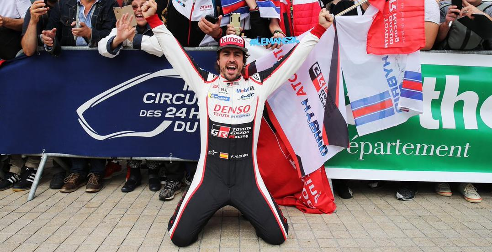
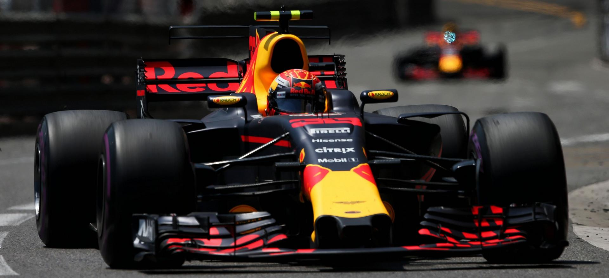
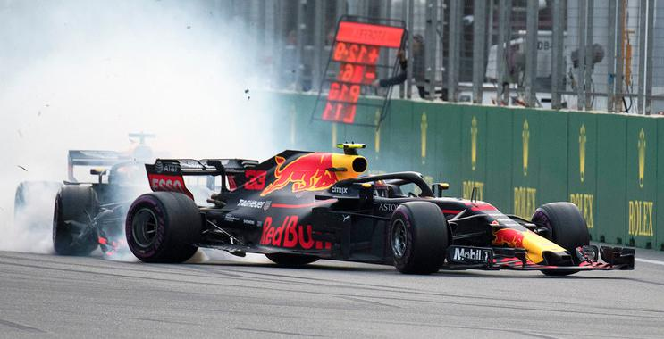
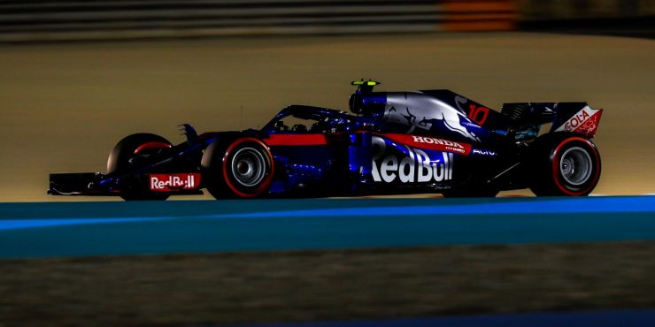
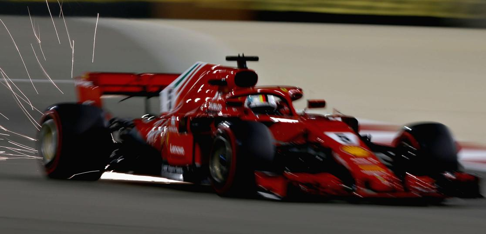
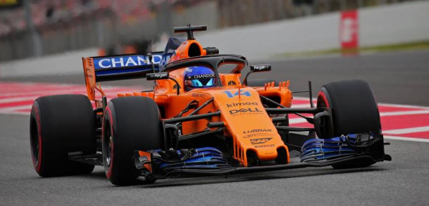

Fernando Alonso no se arruga. El gen competitivo es algo innato en el ADN del piloto de McLaren en Fórmula 1 y lo demuestra con el exigente que les espera al asturiano dentro de los circuitos.
Motivado por la falta de éxito en la máxima categoría del automovilismo, Fernando ha querido probar suerte en otras disciplinas. En 2017 ya tuvo su primera toma de contacto con la IndyCar estadounidense, una competición muy popular en América en la que los monoplazas compiten, en su mayoría, en óvalos. Alonso no corrió en una carrera cualquiera, sino que buscó su participación en las 500 Millas de Indianápolis, una de las tres principales pruebas de automovilismo a nivel mundial junto con las 24 Horas de Le Mans y el Gran Premio de Mónaco.
Alonso no tuvo suerte en Indianápolis. Un problema en su motor le apartó prematuramente de la carrera, aunque todo el público estadounidense se quedó gratamente sorprendido por las capacidades del bicampeón del mundo de F1.
En 2018 no podía ser menos. Pese a que el piloto de McLaren no pudo estar en la Indy 500 por motivos de agenda, sí aseguró su participación en el campeonato de resistencia. El asturiano afronta un año repleto de compromisos en los circuitos. Compaginar Fórmula 1 con WEC solo le permitirá tener cinco fines de semana libres de junio hasta finales de noviembre, una exigencia brutal para un piloto de automovilismo.
Es, de hecho, en junio uno de los meses más exigentes para Alonso; no va a descansar ninguna semana. Arrancó con el GP de Canadá y sigue el siguiente fin de semana con las míticas 24 Horas de Le Mans. Después seguirá en Francia para disputar el GP de Fórmula 1. Tras esto encara dos semanas consecutivas de GP de Austria y Gran Bretaña.
El otro punto clave de su ‘Súpertemporada’ está en octubre, donde volverá a estar ocupado todas las semanas. Primer con el Gran Premio de Japón y, seguidamente, las 6 Horas de Fuji del Mundial de Resistencia. La siguiente semana toca viaje a Estados Unidos para el GP de Fórmula 1 y para cerrar el mes, GP de México.
Alonso afronta su temporada más exigente. Puede que los resultados no estén acompañando en su categoría predilecta, aunque no se puede negar que el piloto español es uno de los que más amor demuestra al automovilismo con sus múltiples participaciones en todo tipo de carreras.

Red Bull afronta en Mónaco una de sus grandes oportunidades de la temporada para hacerse con la victoria. El equipo austriaco ya ha subido a lo más alto del cajón en 2018, en el Gran Premio de China, aunque en el Principado podría lograrlo sin necesidad de infortunios o incidencias de carrera.
Desde 2008, el equipo de Max Verstappen y Daniel Ricciardo ha metido, como mínimo, a uno de sus coches entre los cinco primeros. Las características del trazado urbano se amoldan a las prestaciones de los monoplazas de las bebidas energética y en la edición de este fin de semana no será diferente. Incluso sus rivales reconocen que Red Bull será un duro enemigo en las calles del Principado: “En España, Ricciardo era mucho más rápido en el último sector”, afirma Lewis Hamilton. “Serán rápidos en Mónaco y difícil de batir”, añade.
En los últimos años, Red Bull suele ir de menos a más a lo largo de la temporada. En Barcelona, introdujeron la primera gran actualización del curso, con nuevos ‘bageboards’, suelo y ‘sidepods’. Los signos de mejora fueron evidentes, aunque esperan que sean más efectivos en circuitos como Mónaco.
“Haremos un análisis antes de Mónaco, pero se ha visto que hemos dado un paso adelante”, admite Christian Horner. “Llevará dos o tres carreras ver cómo funcionan en realidad”, añade el jefe de equipo de Red Bull.
Pese a tener velocidad los domingos, el punto débil de Red Bull continúa siendo en clasificación. Pese a que el trazado de Mónaco le puede ir bien al RB14, también es cierto que sin una buena posición de parrilla para la carrera, pierdes un importante porcentaje de posibilidades de hacerte con la victoria. La Pole es crucial en Mónaco, donde adelantar es casi imposible.
“Nuestro problema es que tenemos que hacer un mejor trabajo los sábados. Al empezar quinto o sexto, tienes aire sucio. Si puedes estar un poco más arriba, llegarán los grandes resultados. Nuestros pilotos tienes que encontrar más rendimiento, porque no somos capaces de competir con los mapas de motor de nuestros rivales”, reconoce Horner.

RNi el guion de Hollywood más extravagante hubiese imaginado una carrera como la de Bakú. Lewis Hamilton se ha llevado una victoria, prácticamente regalada, en un final caótico en el que los dos Red Bull se tocaron en plena recta de meta. Bottas sufrió un pinchazo cuando era líder a falta de pocas vueltas y Ferrari perdió una victoria prácticamente cantada. Sainz fue quinto y Alonso, séptimo.

Pocos apostaban por el resurgir de Honda en 2018, aunque el motorista japonés está respondiendo con actos a todos aquellos que ponían en duda el potencial de su propulsor en su cuarto año como suministrador en F1.
La era McLaren-Honda es historia y los japoneses han iniciado un nuevo proyecto junto a Toro Rosso. Honda tuvo problemas con el turbo en la cita inaugural de Australia por lo que tuvo que sustituir estos componentes para la siguiente cita, en Bahréin. Sin embargo, en China, ha demostrado que el trabajo llevado a cabo durante los últimos meses ha comenzado a dar sus frutos.
En el Circuito de Shanghái se encuentra la segunda recta más larga del campeonato, con algo más de un kilómetro de longitud. El ‘speed trap’ es una buena referencia para comprobar el progreso de un motor de un año a otro y Honda es el motorista que más ha progresado al respecto.
En 2017, los japoneses contaban con la velocidad punta más baja de la parrilla en China, con 314 km/h. En 2018, el dato ha ascendido hasta los 321 km/, por encima de Renault. Los franceses fueron los más lentos en Shanghái, pasando den 323 km/h en 2017 a 318 km/h en 2018.
Ferrari y Mercedes continúan siendo la referencia. En cuanto a los italiano, mantiene la misma velocidad punta, mientras que Mercedes ha perdido una ligera ventaja respecto a 2017. Todo esto, evidentemente, está sujeto a la configuración aerodinámica de todos los coches, aunque se ha tomado como referencia el monoplaza más rápido con cada uno de los cuatro motores.

¿Cómo se cocinó la victoria de Sebastian Vettel en el Gran Premio de Bahréin? El piloto de Ferrari fue el gran protagonista de la primera carrera nocturna de año tras una magistral victoria que selló una carrera sin errores del alemán. Vettel salió desde la Pole y optó a una única parada en la vuelta 18. Bottas, principal rival por la victoria, copió su estrategia para no correr riesgos y pasó por boxes en la vuelta 20.
Los tres primeros clasificados siguieron una estrategia similar a dos stints, aunque todo cambia desde el cuarto clasificado, Pierre Gasly. El francés otro de los destacados de la carrera. El piloto francés consiguió una inesperada cuarta posición siguiendo una estrategia a tres stints diferentes, suficiente para mantener a ralla a Kevin Magnussen y Nico Hulkenberg. Solo Ericsson (9º) rompió la tendencia de las dos paradas del cuarto al décimo.
Fernando Alonso, por su parte siguió una estrategia a dos pasos por el garaje, copiando en todo momento lo que hacia Nico Hülkenberg, con el objetivo de realizar un ‘undercut’. Desafortunadamente para el español, no fue así, y tuvo que conformarse con la séptima plaza.

Los test de pretemporada echaron el cierre este viernes. Dos semanas de entrenamientos intensos que han dejado varios datos relevantes de cara al inicio de la campaña en Australia dentro de dos semanas.
Mercedes ha sido el equipo que más vueltas ha acumulado durante los ocho días de pruebas, con una suma de 1.040 giros al trazado catalán entre Lewis Hamilton y Valtteri Bottas, casi el doble de lo alcanzado por McLaren: en total, la estructura de Woking ha completado 589 vueltas a Montmeló, el que menos de toda la pretemporada, muy por detrás de Toro Rosso con un motor Honda que, hasta ahora, no ha dado problemas y con el que han podido acumular 821 giros.
Ferrari ha sido el segundo equipo que más kilómetros ha completado tras dar 926 vueltas al Circuit de Barcelona-Catalunya. Red Bull ha dejado muy buenas sensaciones esta pretemporada, pues Mercedes cree que será el principal desafío de la nueva campaña. En total, Max Verstappen y Daniel Ricciardo han sumado 780 vueltas.
En cuanto a los registros por vuelta, Ferrari se adjudicó los cronos más rápidos en los dos últimos días de entrenamientos. Primero Sebastian Vettel, con un 1:17.182 y por último Kimi Räikkönen, el último día, con un tiempo de 1:17.221. Curiosamente, ha sido Ferrari el equipo que más vueltas rápidas ha acumulado durante los últimos ocho días, pues han sido los más veloces en cuatro de las jornadas disputadas. Pese a ser el equipo con más rodaje, Mercedes solo fue el más rápido el día 5, de la mano de Lewis Hamilton, con un tiempo de 1:19.333. En anécdota queda el registro de 2:18.545 logrado por Fernando Alonso en el día 4 debido a las inclemencias meteorológicas, jornada en la que, prácticamente, ningún equipo salió del garaje.